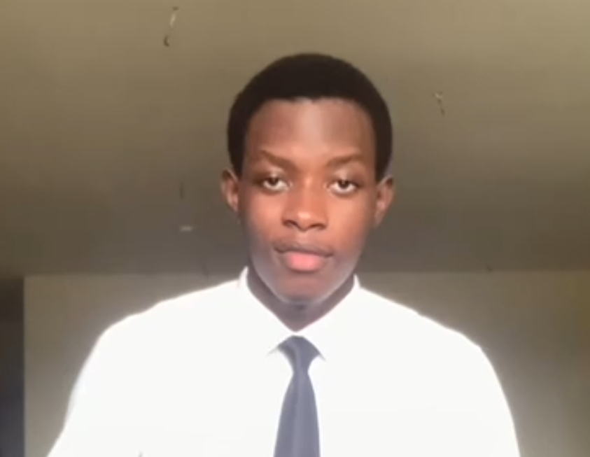

Oyinbo Philip

Summary
I am an ambitious and hardworking man who strives in pursuit of his Full Stack Web Dev goal.
Education
- First School Living Certificate [FSLC] - HMIS (2011/12 - 2014/15)
- Basic Education Certificate [BEC] - HMIS (2015/16 - 2017/18)
- West African Senior School Certificate [WASSC] - HMIS (2018/19 - 2020/21)
Work Experience
Skills
- Fashion Design:⭐️⭐️⭐️⭐️
- Photography:⭐️⭐️⭐️⭐️⭐️
- Videography:⭐️⭐️⭐️
- Video Editing:⭐️⭐️⭐️
- Photo Editing:⭐️⭐️⭐️
Awards and Certifications
- Best in Mathematics - HMIS FSLC Students (August 2015)
- Best in Mathematics - HMIS BEC Students (August 2018)
- Best in Mathematics - HMIS WASSC Students (August 2021)
- Overall Best Performing Science Student - HMIS WASSC Students (August 2021)
Other